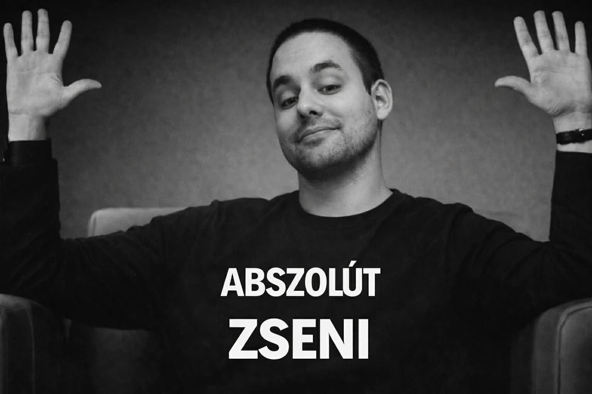
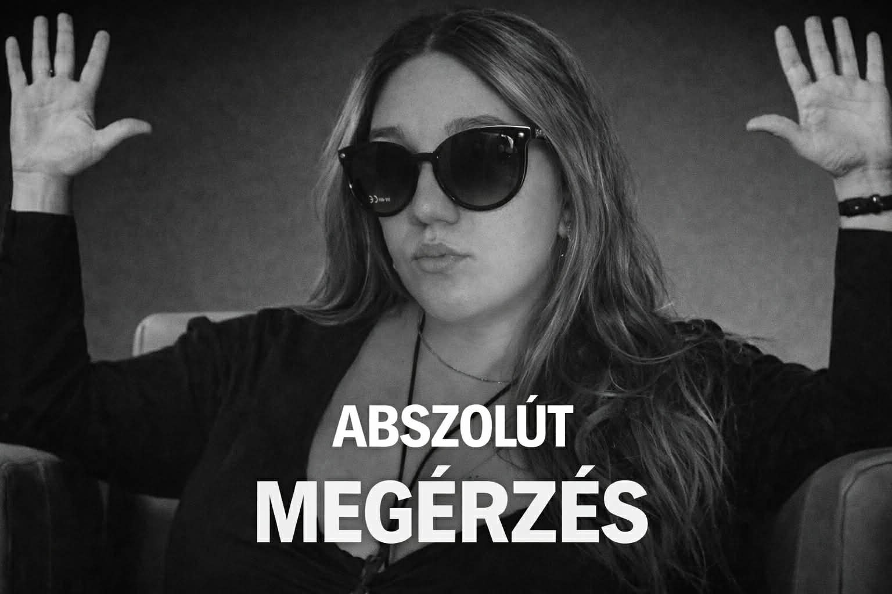
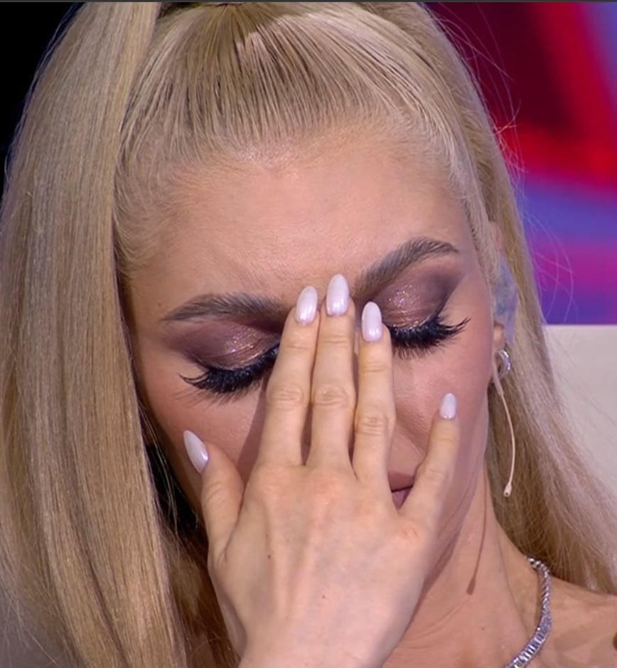
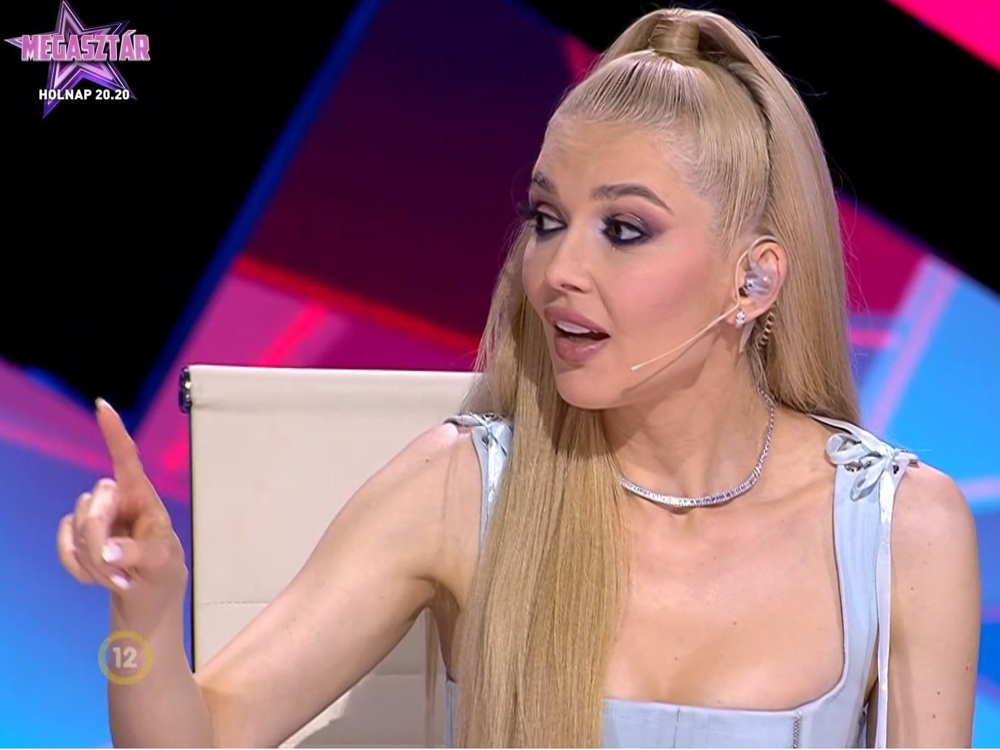
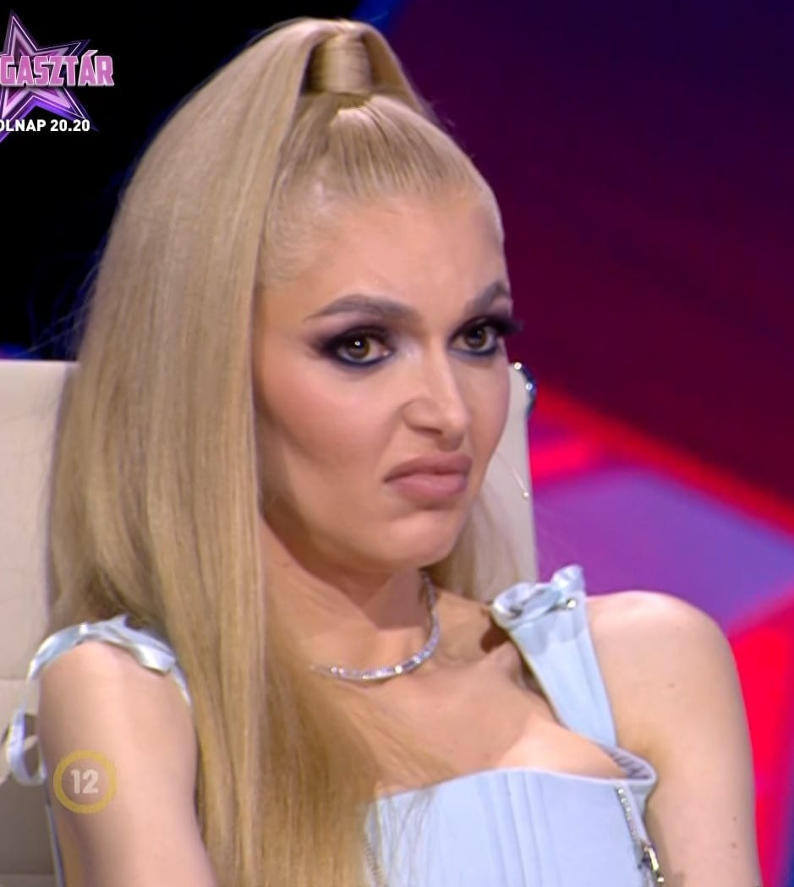
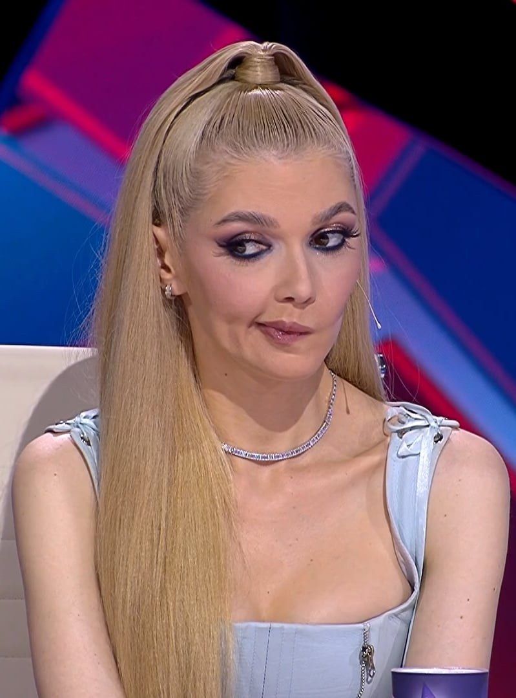

🎬
Abszolút filmszínház
A mi külön kis filmszínházunk, ahol néha egyetlen screenshot többet mond minden szónál. Ide kerül majd a két mémünk. 😄
Szia Netti! Készítettem neked egy apró helyet a végtelen interneten, ami most csak rólad szól. Nem kell semmit megválaszolnod vagy eldöntened. Csak szerettem volna adni neked valamit, amiben egy kicsit benne vagyok én is.
Vannak dolgok, amiket talán másnak el sem lehet magyarázni — nekünk mégis egy egész kis történetet jelentenek.
A mi külön kis filmszínházunk, ahol néha egyetlen screenshot többet mond minden szónál. Ide kerül majd a két mémünk. 😄
A legendásan jól időzített, screenelt herceg Erikás fejek. Vannak poénok, amikhez nem is kell magyarázat — elég csak elővenni a megfelelő képet.
Egy jó K-pop dal, mellé egy meggyes vagy cseresznyés Milka… remélem, ez a kombináció ma is tud egy kis mosolyt csalni az arcodra.
Két ikonikus pillanat a mi saját kis filmszínházunkból. 😄


Minden élethelyzetre van egy megfelelő arckifejezés. A használati útmutató teljesen felesleges — úgyis tudjuk, mikor melyiket kell elővenni. 😂




Vészhelyzet esetén: screenshot elő, magyarázkodás kikapcsolva. ✨
„Van, akivel még a legkisebb hülyeségből is közös emlék lesz.”
és néha pont ezek a legjobbakVolt egy tervünk, amit sokszor elképzeltem: együtt élni, végre nem csak képernyőn keresztül. És persze ott van a névlista is… Kadosa még mindig erős versenyző nálad. Nálam azért még tart a névvita. 😄
Nem tudom, mit hoz a jövő, és nem szeretnélek semmire sürgetni. Csak jó érzés volt közösen elképzelni ezeket a hétköznapi, egyszerű dolgokat.
„Nem kell minden csillagnak ugyanott lennie ahhoz, hogy ugyanazt az eget nézzük.”
egy gondolat tőlem nekedAzért ezt a dalt választottam, mert szeretném, ha úgy látnád magad, ahogyan én látlak: különlegesnek és gyönyörűnek, pontosan olyannak, amilyen vagy. Nem kell megváltoznod ahhoz, hogy értékes és szerethető legyél.
Netti, ezt a pár sort külön neked hagytam. Nem nagy dolog — csak őszinte.
Azért készült ez az oldal, mert szerettem volna valami olyat adni neked, amit nem lehet csak úgy levenni egy polcról. Valamit, amibe beletettem egy kicsit abból, amit irántad érzek.